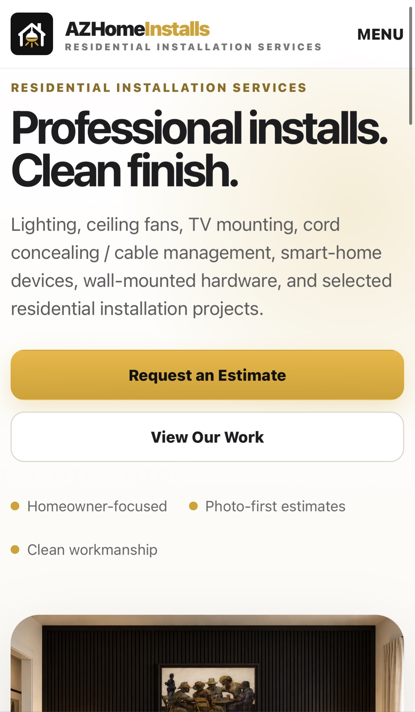

The idea. The actual timeline.
Our documented AZHomeInstalls journey from the initial residential installation business concept to its first paid job.

From concept to first revenue
The timeline comes from the AZHomeInstalls historical log updated October 13, 2026. Dates are Phoenix local.
The residential installation concept took shape; FixtureWorks was replaced by AZHomeInstalls.
Domain and public website, estimate requests, GitHub codebase and Cloudflare services.
Cloudflare D1, protected admin, quotes, lead status and scheduling.
Workspace email, early outbound automation, brand assets and Stripe payment readiness.
First recorded Facebook Marketplace inquiry; Microsoft email test landed in Junk.
A client job was booked and paid: $200 cash collected in full. The client later corrected the television size to 85 inches.